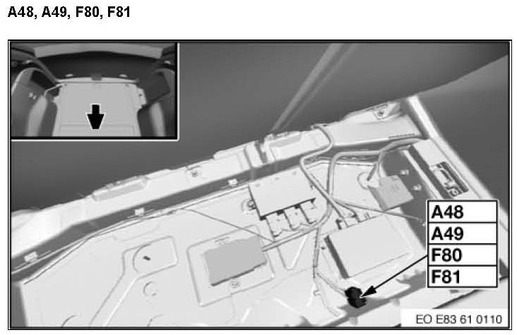

Operation CHARM
: Car repair manuals for everyone.
Home
>>
BMW
>>
2007
>>
X3 3.0si (E83) L6-3.0L (N52K)
>>
Repair and Diagnosis
>>
Diagrams
>>
Components
>>
A_Control Modules, Assemblies
>>
A48 Fuse Holder, Rear
A48 Fuse Holder, Rear
